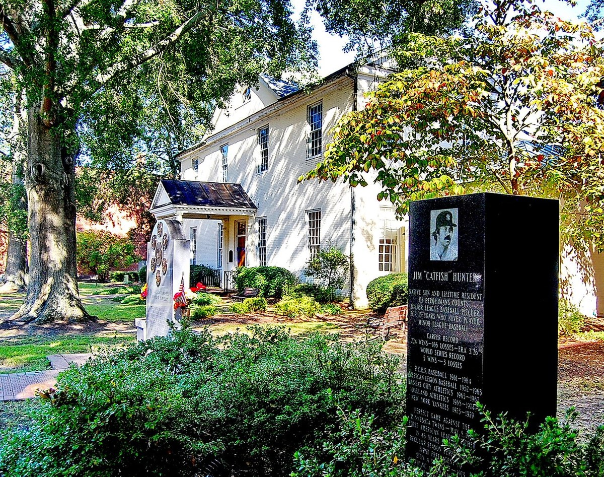

Catfish Hunter
A North Carolina farm kid with pinpoint control who threw Oakland's first perfect game and anchored three straight champions.
The Catfish Hunter Story
James Augustus Hunter was born April 8, 1946, in Hertford, North Carolina, a farm town of about 2,000 people, the youngest of eight kids. His father Abbott was a tenant farmer and logging foreman who taught all of them to hunt and fish. Jim learned to pitch in backyard games against his brothers, where the rule was simple. You threw strikes or you didn't play.
At Perquimans County High he won state titles in football, track and baseball. Then on Thanksgiving Day 1963, his brother Pete's shotgun went off by accident on the way home from a hunting trip and hit Jim in the right foot. He lost his small toe and dozens of pellets lodged in the foot. Plenty of scouts backed off. He went 13 and 1 his senior season with five no hitters, including a perfect game.
One scout never left. Clyde Kluttz of the Kansas City A's practically lived at the Hunter house, and he talked Charlie Finley into it. Finley came to Hertford, watched him pitch, and signed him for $75,000 in 1964. Finley also decided a ballplayer needed a nickname, asked Jim what he liked to do, and when Jim said hunting and fishing, made up a story about a runaway kid and two catfish. Jim Hunter became Catfish Hunter over the phone.
He made his big league debut on May 13, 1965, at 19, after the Mayo Clinic pulled more pellets out of his foot. He went 8 and 8 for a team that lost 103 games. He didn't throw especially hard. What he had was command, and a willingness to throw strikes even right after somebody hit one out against him, which impressed his pitching coach Ed Lopat.
The A's moved to Oakland in 1968, and on May 8 of that first season Catfish threw a perfect game against the Minnesota Twins at the Coliseum. He struck out 11, and he also went 3 for 4 at the plate with three RBIs in a 4 to 0 win. It was the first perfect game in the American League regular season since 1922. Only 6,298 people were there.
In 1971 he won 21 games and the A's won 101 and the West, though Baltimore swept them in the ALCS. That was the start of four straight 20 win seasons in Oakland. In 1972 he won 21 more with a 2.04 ERA, allowed one run in eight and two thirds innings in Game 2 of the World Series against Cincinnati, and won Game 7 in relief at Riverfront Stadium for the franchise's first title since 1930.
1973 was 21 and 5. He beat Baltimore twice in the ALCS, including a shutout in the deciding Game 5 at the Coliseum. Then with Oakland facing elimination in Game 6 of the World Series, he outpitched Tom Seaver 3 to 1, and the A's won Game 7 the next day.
1974 was the best of all of it. He led the league with 25 wins and a 2.49 ERA, won the Cy Young, saved Game 1 of the World Series against the Dodgers by striking out Joe Ferguson for the final out, and won Game 3 at the Coliseum. Three straight championships, and Catfish was the ace of every one.
Then it came apart. Hunter's 1974 contract required Finley to pay half his salary into an insurance annuity, and Finley didn't. The players union moved to terminate the contract, and on December 16, 1974, arbitrator Peter Seitz ruled in Hunter's favor and made him a free agent. Teams descended on Ahoskie, North Carolina, to bid, and on New Year's Eve he signed with the Yankees. Clyde Kluttz was scouting for New York by then. Catfish said he wouldn't have signed with them if anybody but Clyde had asked.
He won 23 games in 1975 with 30 complete games and three pennants in New York followed, two of them championships. Diabetes and a worn arm slowed him, and 1979 brought the deaths of Kluttz, his father and Thurman Munson within three months. He retired after that season at 33 with 224 wins and five rings, and went home to his farm.
He was elected to the Hall of Fame in 1987. The A's retired his number 27 on June 9, 1991, the first number the franchise ever retired, and in 2004 they created the Catfish Hunter Award. He was diagnosed with ALS in 1998 and died at home in Hertford on September 9, 1999. He was 53. In 2018 his widow Helen accepted his place in the first class of the A's Hall of Fame.
What He Meant to Us
The A's dynasty gets remembered for the mustaches and the fights and Reggie, and all of that's fair. But every one of those three titles had Catfish at the front of the rotation, and he's the guy I'd want on the mound in any game I ever cared about. No radar gun stuff. Just strikes, corners, and a calm that drove hitters nuts.
Think about the perfect game for a second. First season in Oakland, a Wednesday in May, six thousand people in the stands, and the 22 year old pitcher strikes out 11 and drives in three of the four runs himself. That's the opening chapter of Oakland baseball, and it's a perfect game.
The way he left still bothers me. Finley wouldn't make a payment he'd agreed to, and the best pitcher in the league walked out the door and became the first big free agent. It wasn't Catfish's fault. If Finley pays the annuity, maybe the dynasty runs a couple more years. We'll never know.
There's a reason number 27 was the first one the A's ever retired. He was the ace before anybody here knew what one was.
In Pictures

Why He Was Clutch
Catfish went 4 and 0 in World Series play with Oakland, and he did it with control, not power. He didn't beat himself with walks, and in October that's the whole thing. In the 1973 ALCS clincher he shut out the Orioles. In the 1973 Series, facing elimination in Game 6, he beat Tom Seaver.
He also did whatever the game asked. In Game 7 of the 1972 World Series he came out of the bullpen in the fifth inning and got the win. In Game 1 of the 1974 Series he came in to get the last out and the save. That's an ace doing whatever the game needed, on the biggest stage there is.
Reggie said he'd give Cat the Cy Young, the MVP, the Academy Award and the kitchen sink after 1974. When the loudest guy in the clubhouse says that about the quiet one, you believe him.
Clutch Moments
- May 8, 1968
Perfect at the Coliseum
In the A's first season in Oakland, the 22 year old retired all 27 Minnesota Twins in a 4 to 0 win, striking out 11, including the last two hitters of the game. He also had three hits and drove in three runs. It was the first regular season perfect game in the American League since 1922.
- October 22, 1972
Game 7 relief win in Cincinnati
With Blue Moon Odom out of the game in the fifth inning of Game 7 at Riverfront Stadium, Catfish came in and gave up one run in two and two thirds innings. Oakland won 3 to 2, Rollie Fingers got the save, and Hunter got the win for the franchise's first championship since 1930.
- October 11, 1973
Shutout for the pennant
In the deciding Game 5 of the ALCS at the Coliseum, Hunter shut out the Orioles 3 to 0, the second time he beat Baltimore in the series. The A's were back in the World Series.
- October 20, 1973
Outpitching Seaver to stay alive
Down three games to two to the Mets, the A's gave Catfish the ball for Game 6 against Tom Seaver. He allowed one run in seven and a third innings, Oakland won 3 to 1, and the A's won Game 7 the next day for back to back titles.
- October 12, 1974
The last out in Game 1
Catfish came out of the bullpen in the ninth inning of Game 1 at Dodger Stadium and struck out Joe Ferguson to finish a 3 to 2 Oakland win. It was the only save of his postseason career.
- October 15, 1974
Game 3 win at home
Back at the Coliseum, Hunter gave the Dodgers one run in seven and a third innings, a Bill Buckner home run in the eighth, and Oakland won 3 to 2 on its way to a third straight championship.
The Highlights
What They Said About Hunter
“Hunter doesn't scare. He keeps on throwing strikes.”
“There was just one thing he did wrong. He flied to center field once.”
“would give Cat the Cy Young Award, the Most Valuable Player Award, the Academy Award, and the kitchen sink.”
“I'm tickled to death for him. It couldn't happen to a better guy.”
“We were not winning before Catfish arrived. He exemplified class and dignity and he taught us how to win.”
Career Stats
| Year | Team | W | L | ERA | G | GS | CG | SHO | SV | IP | H | ER | BB | SO | WHIP |
|---|---|---|---|---|---|---|---|---|---|---|---|---|---|---|---|
| 1965 | KCA | 8 | 8 | 4.26 | 32 | 20 | 3 | 2 | 0 | 133.0 | 124 | 63 | 46 | 82 | 1.28 |
| 1966 | KCA | 9 | 11 | 4.02 | 30 | 25 | 4 | 0 | 0 | 176.2 | 158 | 79 | 64 | 103 | 1.26 |
| 1967 | KCA | 13 | 17 | 2.81 | 35 | 35 | 13 | 5 | 0 | 259.2 | 209 | 81 | 84 | 196 | 1.13 |
| 1968 | OAK | 13 | 13 | 3.35 | 36 | 34 | 11 | 2 | 1 | 234.0 | 210 | 87 | 69 | 172 | 1.19 |
| 1969 | OAK | 12 | 15 | 3.35 | 38 | 35 | 10 | 3 | 0 | 247.0 | 210 | 92 | 85 | 150 | 1.19 |
| 1970 | OAK | 18 | 14 | 3.81 | 40 | 40 | 9 | 1 | 0 | 262.1 | 253 | 111 | 74 | 178 | 1.25 |
| 1971 | OAK | 21 | 11 | 2.96 | 37 | 37 | 16 | 4 | 0 | 273.2 | 225 | 90 | 80 | 181 | 1.11 |
| 1972 | OAK | 21 | 7 | 2.04 | 38 | 37 | 16 | 5 | 0 | 295.1 | 200 | 67 | 70 | 191 | 0.91 |
| 1973 | OAK | 21 | 5 | 3.34 | 36 | 36 | 11 | 3 | 0 | 256.1 | 222 | 95 | 69 | 124 | 1.14 |
| 1974 | OAK | 25 | 12 | 2.49 | 41 | 41 | 23 | 6 | 0 | 318.1 | 268 | 88 | 46 | 143 | 0.99 |
| 1975 | NYY | 23 | 14 | 2.58 | 39 | 39 | 30 | 7 | 0 | 328.0 | 248 | 94 | 83 | 177 | 1.01 |
| 1976 | NYY | 17 | 15 | 3.53 | 36 | 36 | 21 | 2 | 0 | 298.2 | 268 | 117 | 68 | 173 | 1.13 |
| 1977 | NYY | 9 | 9 | 4.71 | 22 | 22 | 8 | 1 | 0 | 143.1 | 137 | 75 | 47 | 52 | 1.28 |
| 1978 | NYY | 12 | 6 | 3.58 | 21 | 20 | 5 | 1 | 0 | 118.0 | 98 | 47 | 35 | 56 | 1.13 |
| 1979 | NYY | 2 | 9 | 5.31 | 19 | 19 | 1 | 0 | 0 | 105.0 | 128 | 62 | 34 | 34 | 1.54 |
| Career | 224 | 166 | 3.26 | 500 | 476 | 181 | 42 | 1 | 3449.1 | 2958 | 1248 | 954 | 2012 | 1.13 |
Regular season stats from the MLB Stats API. KCA is the Kansas City Athletics, the same franchise before its 1968 move to Oakland; TOT rows combine a season split between teams. Scroll the table sideways on a phone.
Postseason
| Year | Team | W | L | ERA | G | GS | CG | SHO | SV | IP | H | ER | BB | SO | WHIP |
|---|---|---|---|---|---|---|---|---|---|---|---|---|---|---|---|
| 1971 | OAK | 0 | 1 | 5.63 | 1 | 1 | 1 | 0 | 0 | 8.0 | 7 | 5 | 2 | 6 | 1.13 |
| 1972 | OAK | 2 | 0 | 2.01 | 5 | 4 | 0 | 0 | 0 | 31.1 | 22 | 7 | 11 | 20 | 1.05 |
| 1973 | OAK | 3 | 0 | 1.82 | 4 | 4 | 1 | 1 | 0 | 29.2 | 23 | 6 | 9 | 12 | 1.08 |
| 1974 | OAK | 2 | 1 | 3.26 | 4 | 3 | 0 | 0 | 1 | 19.1 | 16 | 7 | 4 | 11 | 1.03 |
| 1976 | NYY | 1 | 2 | 3.92 | 3 | 3 | 2 | 0 | 0 | 20.2 | 20 | 9 | 5 | 10 | 1.21 |
| 1977 | NYY | 0 | 1 | 10.38 | 2 | 1 | 0 | 0 | 0 | 4.1 | 6 | 5 | 0 | 1 | 1.38 |
| 1978 | NYY | 1 | 1 | 4.26 | 3 | 3 | 0 | 0 | 0 | 19.0 | 20 | 9 | 4 | 10 | 1.26 |
| Career | 9 | 6 | 3.26 | 22 | 19 | 4 | 1 | 1 | 132.1 | 114 | 48 | 35 | 70 | 1.13 |
Catfish Hunter: Fast Facts
What years was Catfish Hunter with the Oakland Athletics?
Catfish Hunter was with the Oakland Athletics from 1968 to 1974 as a starting pitcher.
What number did Catfish Hunter wear?
Catfish Hunter wore number 27.
What are Catfish Hunter's signature numbers?
131 wins for Oakland; 224 career wins; 25 wins in 1974, his Cy Young season; 5 world Series rings.
What were Catfish Hunter's biggest honors?
1974 AL Cy Young Award; 5x World Series champion (1972, 1973, 1974 Athletics; 1977, 1978 Yankees); 8x All Star (1966, 1967, 1970, 1972, 1973, 1974, 1975, 1976); Perfect game against the Twins, May 8, 1968; Five straight 20 win seasons (1971 to 1975), four of them in Oakland.
What are some of Hunter's biggest moments?
Perfect at the Coliseum (May 8, 1968); Game 7 relief win in Cincinnati (October 22, 1972); Shutout for the pennant (October 11, 1973). Every one is in the Clutch Moments section above.